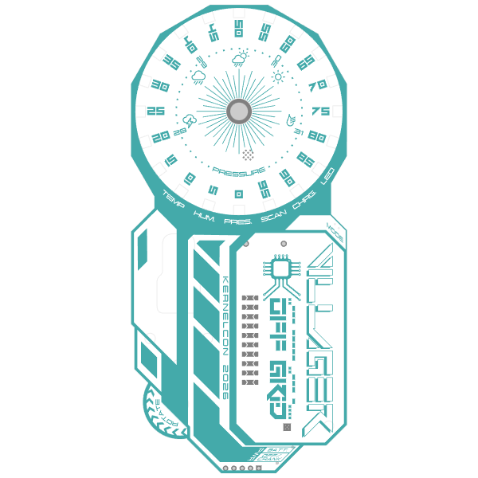

this year's badge is a crank powered weather device! it can read temperature, humidity, and pressure. collecting these readings can be used to predict the weather!
for adventurous souls, an interactive quest awaits!
this site contains information about the badge, an interactive bill of materials (BOM), assembly, and a description of all the fun activities you can do with your badge!